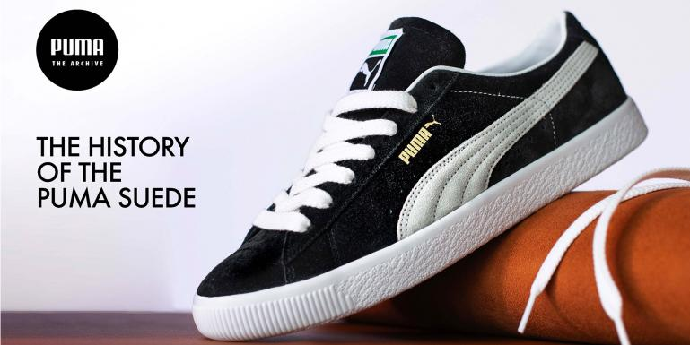
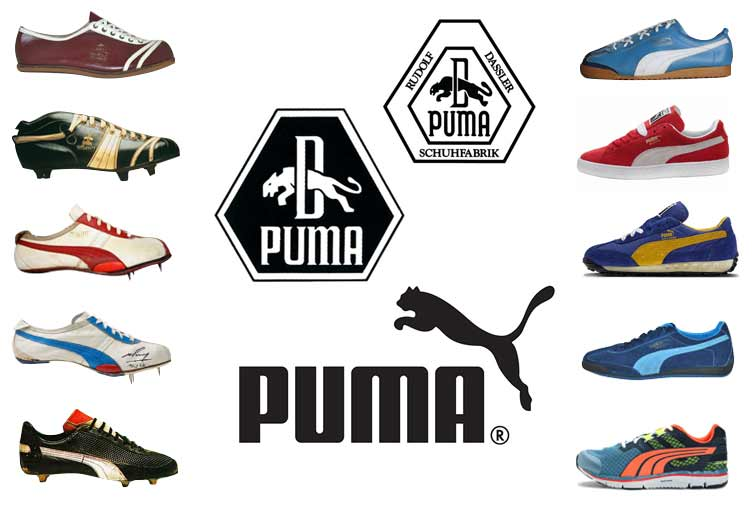

Контакти
ТОВ «ПУМА УКРАЇНА»
Адреса: 01014, м. Київ, вул. Болсуновська, 13-15, БЦ «IQ Business Center»»
Понеділок-п'ятниця, з 9:30 до 18:00
Email: info@puma.com
Історія створення
Puma була заснована в 1948 році в Німеччині Рудольфом Дасслером після розриву партнерства з братом Адольфом Дасслером, який заснував компанію Adidas. Після Другої світової війни брати, які раніше разом працювали над брендом спортивного взуття, вирішили піти різними шляхами через особисті та професійні конфлікти.
Рудольф заснував компанію **Puma**, яка спочатку мала назву *Ruda* (скорочення від його імені та прізвища), але пізніше її перейменували в Puma, асоціюючи бренд з швидкістю, силою і агресивністю хижака. З самого початку компанія почала виготовляти високоякісне спортивне взуття для професійних спортсменів.
У 1952 році Puma представила свої перші футбольні бутси **Super Atom** з інноваційними металевими шипами, що зробило компанію одним з лідерів у виробництві спортивного взуття.
